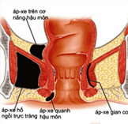
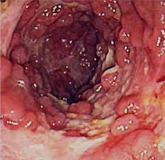
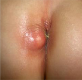
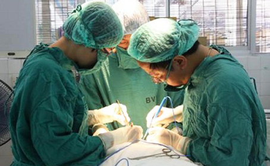

Apxe hậu môn
Apxe quanh hậu môn là khi trong các mô mềm xung quanh ống hậu môn, trực tràng hoặc trong các khoảng cách giữa chúng bị nhiễm khuẩn có mủ cấp tính, hình thành apxe và được gọi là apxe quanh ống hậu môn, trực tràng. Đặc điểm của nó là có thể tự vỡ ra hoặc dẫn đến rò hậu môn sau phẫu thuật. Đây là một bệnh hậu môn trực tràng thường gặp, cũng là thời kì cấp tính của quá trình bệnh lý về ống hậu môn và viêm trực tràng, rò hậu môn là thời kì mãn tính.
  
NGUYÊN NHÂN
1. YẾU TỐ VIÊM NHIỄM
Viêm nhiễm là nguyên nhân chủ yếu dẫn đến apxe hậu môn. Người mắc các bệnh như nứt kẽ hậu môn, trĩ, rò hậu môn, viêm nang lông xung quanh da hậu môn,.... sẽ rất dễ hình thành khối áp-xe quanh hậu môn. Ngoài ra còn một số bệnh khác như viêm loét đại tràng, thiếu máu, cơ thể suy nhược, thiếu dinh dưỡng, sức đề kháng kém,.... cũng sẽ gây ra ap-xe hậu môn.
2. DO MIỄN DỊCH
Tỷ lệ phát bệnh ap-xe ở trẻ nhỏ và các bệnh lí về hậu môn thường có liên quan đến chức năng miễn dịch. Các cháu nhỏ do chức năng miễn dịch ở niêm mạc hậu môn trực tràng chưa hoàn thiện sẽ rất dễ viêm nhiễm, những trẻ sau 14 tháng tuổi khi khả năng miễn dịch tăng cao tỷ lệ ap-xe hậu môn sẽ giảm hẳn.
3.YẾU TỐ ĐIỀU TRỊ
Các thao tác xét nghiệm và điều trị các bệnh lí về hậu môn nếu không được làm đúng cũng có thể gây ra ap-xe.
4. HẬU PHẪU
Một vài bệnh nhân sau khi tiến hành các thủ thuật điều trị hậu môn trực tràng đã xuất hiện tình trạng viêm nhiễm, hình thành các ổ ap-xe, viêm nhiễm có thể là do sau tiểu phẫu niệu đạo, sau khi sinh nở, tiểu phẫu bộ phận sinh dục,....
5. CÁC BỆNH LÝ KHÁC
Đái đường, máu trắng, thiếu máu, suy dinh dưỡng, cơ thể mệt mỏi, suy nhược, sức đề kháng yếu đều có thể biến chứng thành ap-xe hậu môn.
TRIỆU CHỨNG
KHỐI SƯNG TẤY
Thời kỳ đầu xuất hiện 1 khối cứng và sưng quanh hậu môn, dần dần to lên, nếu để lâu có thể tự vỡ.
ĐAU
Là triệu chứng thường thấy nhất của apxe hậu môn, dần dần bị nặng hơn có thể sưng tấy, đau rát làm cho người bệnh đi lại bất tiện, đau không ngồi được.
NGỨA
Do sự kích thích của dịch nhầy trong hậu môn và dịch mủ bên ngoài hậu môn tăng lên làm cho vùng da quanh hậu môn luôn ẩm ướt, ngứa ngáy.
SƯNG
Diềm hậu môn sưng thành cục, là một trong những triệu chứng thường gặp, nếu ổ apxe phát viêm cấp tính không dẫn lưu được thì càng sưng to.
TRIỆU CHỨNG TOÀN THÂN
Người mắc bệnh apxe hậu môn thường có hiện tượng sốt và nóng đỏ cục bộ, sốt nhẹ, cũng có lúc sốt cao, nhiệt độ khoảng 37-40°C. Ngoài ra người bệnh thấy toàn thân khó chịu, ăn uống kém, ngủ không ngon.
CHẢY MỦ
Dịch mủ nhiều hay ít liên quan tới ống rò hậu môn to nhỏ, dài ngắn khác nhau. Ổ apxe mới hình thành hoặc viêm cấp tính thường có mủ nhiều, mùi hôi, dịch mủ vàng và đặc.
tác hại
1. YẾU TỐ VIÊM NHIỄM
Viêm nhiễm là nguyên nhân chủ yếu dẫn đến apxe hậu môn. Người mắc các bệnh như nứt kẽ hậu môn, trĩ, rò hậu môn, viêm nang lông xung quanh da hậu môn,.... sẽ rất dễ hình thành khối áp-xe quanh hậu môn. Ngoài ra còn một số bệnh khác như viêm loét đại tràng, thiếu máu, cơ thể suy nhược, thiếu dinh dưỡng, sức đề kháng kém,.... cũng sẽ gây ra ap-xe hậu môn.
2. DO MIỄN DỊCH
Tỷ lệ phát bệnh ap-xe ở trẻ nhỏ và các bệnh lí về hậu môn thường có liên quan đến chức năng miễn dịch. Các cháu nhỏ do chức năng miễn dịch ở niêm mạc hậu môn trực tràng chưa hoàn thiện sẽ rất dễ viêm nhiễm, những trẻ sau 14 tháng tuổi khi khả năng miễn dịch tăng cao tỷ lệ ap-xe hậu môn sẽ giảm hẳn.
3.YẾU TỐ ĐIỀU TRỊ
Các thao tác xét nghiệm và điều trị các bệnh lí về hậu môn nếu không được làm đúng cũng có thể gây ra ap-xe.
Phương pháp
Kĩ thuật xâm lấn tối thiểu HCPT thế hệ thứ 3 được sử dụng trong điều trị bệnh APXE hậu môn đem lại hiệu quả cao cho người bệnh. Khi điều trị bằng cao tần, điện kẹp sẽ nhanh chóng thủy phân mấu trĩ, điện trở kháng của các tổ chức sinh vật tăng lên. Khi điện trở kháng này kết hợp với trở kháng mà thiết bị sản sinh ra, máy sẽ tự báo động, tức là đã đạt được hiệu quả điều trị, giải quyết được vấn đề kĩ thuật về việc đặt giờ. Hệ thống kiểm tra do máy tính điều khiển, hình ảnh rõ nét, chẩn đoán chính xác, có thể dừng ảnh, lưu, quay lại, phóng to, phân tích, định lượng...
Phương pháp có những ưu điểm dưới đây
1. Ít đau: trong quá trình phẫu thuật sẽ gây tê cục bộ hoặc toàn bộ, giảm thiểu đau đớn cho người bệnh.
2. Xâm lấn tối thiểu, an toàn cao: toàn bộ quá trình phẫu thuật được khống chế tỉ mỉ bởi máy tính, trong khi phẫu thuật và sau khi phẫu thuật ít xâm lấn, an toàn cao và đáng tin cậy.
3, Hồi phục nhanh: thời gian nằm viện ngắn, sau khi phẫu thuật vết thương hồi phục nhanh, không ảnh hưởng đến các chức năng bình thường của hậu môn.
4, Giảm khả năng tái phát: phương pháp này đã giúp cho rất nhiều bệnh nhân hồi phục sức khỏe một cách thành công, qua quan sát và theo dõi cho thấy tỉ lệ tái phát là rất thấp.
5, Tính chính xác cao: sử dụng kĩ thuật số hóa thị giác giúp xác định một cách chính xác vị trí tổn thương rò hậu môn, hỗ trợ cho tiểu phẫu diễn ra thuận lợi. Điều quan trọng khi điều trị rò hậu môn là trong các thao tác phẫu thuật điều trị cụ thể, nhất thiết phải tìm kiếm tỉ mỉ lỗ rò, tránh cắt đứt vòng hậu môn trực tràng. Lựa chọn kĩ thuật xâm lấn tối thiểu là phương pháp điều trị khá tốt hiện nay, giảm thiểu tái phát về sau.
"Điều quan trọng khi điều trị rò hậu môn là trong các thao tác phẫu thuật điều trị cụ thể, nhất thiết phải tìm kiếm tỉ mỉ lỗ rò, tránh cắt đứt vòng hậu môn trực tràng. Lựa chọn kĩ thuật xâm lấn tối thiểu là phương pháp điều trị khá tốt hiện nay, giảm thiểu tái phát về sau."
Lời khuyên B.Sỹ
Các chuyên gia phòng khám chúng tôi khuyến cáo: nếu phát hiện các triệu chứng như trên của bệnh apxe hậu môn, bạn nên đến các bệnh viện, phòng khám có chuyên khoa hậu môn trực tràng để điều trị. Ngoài ra bình thường bạn nên làm tốt công tác phòng chống, chú ý ăn uống vệ sinh, đảm bảo sạch sẽ, tạo thói quen đaị tiện đúng giờ, giữ vệ sinh vùng hậu môn sạch sẽ.